A technical introduction to yield loss modeling in plant pathology, from damage functions to mixed-effects and meta-analytic frameworks
English
epidemiology
yield loss
mixed models
meta-analysis
Author
Kaique Alves
Published
April 12, 2026
Yield loss analysis is one of the central quantitative problems in plant disease epidemiology because it provides the link between disease intensity and agronomic consequence. Disease variables such as incidence, severity, and epidemic progress are biologically informative in their own right, but, from an applied perspective, they are often intermediate quantities. The broader epidemiological and agronomic question is how variation in disease intensity translates into reduction in yield.
This question is fundamental for crop-loss assessment, breeding prioritization, cultivar evaluation, and disease management decision-making. It is also statistically nontrivial, because the severity-yield relationship is rarely estimated from a single homogeneous experiment. In most practical settings, yield loss datasets are hierarchical, with multiple studies, years, environments, and disease pressure scenarios contributing to substantial heterogeneity in both attainable yield and disease response.
This article introduces the basic yield loss framework commonly used in plant pathology and then discusses two complementary statistical approaches:
mixed-effects modeling, when the goal is to model severity-yield relationships directly in hierarchical datasets
meta-analytic synthesis, when the goal is to combine study-specific damage estimates across experiments
The discussion is informed both by the broader crop-loss literature in plant pathology and by my recent work on soybean rust damage under climate variability in Brazil. In practical terms, the mixed-effects examples below are fitted with the lmer() function from the lme4 package, whereas the meta-analytic examples are fitted with the metafor package. The inferential focus, however, remains on the statistical framework rather than on the software itself. For readers interested in a direct connection to an applied research workflow, see the Plant Pathology paper and the corresponding analysis page.
Why yield loss models matter
The biological premise is straightforward: increasing disease burden is generally associated with declining yield. However, the epidemiological interpretation depends strongly on how that relationship is parameterized and on which quantity is treated as the inferential target.
A classical linear damage function may be written as:
\[Y = b_0 + b_1 D\]
where:
\(Y\) is yield
\(D\) is disease intensity, frequently represented by severity in percentage terms
\(b_0\) is the intercept, commonly interpreted as attainable yield
\(b_1\) is the slope, describing the change in yield per unit increase in disease
In most yield loss applications, \(b_1\) is negative. Consequently, a steeper negative slope indicates greater damage per unit increase in disease intensity.
From this formulation, we often derive the damage coefficient, a relative measure that expresses the proportional reduction in yield associated with each 1 percentage-point increase in disease:
\[DC = -100 \times \frac{b_1}{b_0}\]
This quantity is especially useful because it rescales the slope by the attainable yield. As a consequence, comparisons of disease damage become more interpretable across studies or environments that differ substantially in yield potential.
The main parameters
Before discussing model fitting, it is useful to clarify the epidemiological interpretation of the main parameters.
Attainable yield
Attainable yield is the expected yield in the absence of disease within the production context under study. In a simple linear damage function, it is approximated by the intercept \(b_0\). Biologically, it is not a universal constant; rather, it is conditional on cultivar, environment, season, management, and the entire set of factors that define the production system.
Slope
The slope \(b_1\) quantifies the rate at which yield changes as disease intensity increases. If disease severity is measured in percentage points and yield in kg/ha, then the slope is interpreted as kg/ha lost per 1 percentage-point increase in severity.
Damage coefficient
The damage coefficient is the relative expression of the slope. It addresses a more transportable epidemiological question: what fraction of attainable yield is lost for each unit increase in disease? This is particularly valuable when comparing studies conducted under distinct yield potentials.
A conceptual example
A convenient way to clarify the epidemiological role of these parameters is to vary them one at a time. I therefore use three separate conceptual plots rather than a single composite figure so that the contribution of each parameter remains explicit.
In this first case, both lines share the same slope, meaning that disease causes the same absolute yield reduction per unit increase in severity in both scenarios. The only difference lies in the intercept. Epidemiologically, this implies a difference in baseline productivity rather than a difference in the damage process itself.
2. Changing only slope
The next plot isolates the effect of the damage slope while holding attainable yield constant.
Here the intercept is identical in both scenarios, so attainable yield is unchanged. What differs is the rate at which yield declines as severity increases. This is the clearest graphical representation of the epidemiological meaning of the damage slope.
3. Changing attainable yield and slope together
This third plot combines both dimensions simultaneously, which is generally closer to the structure of empirical datasets.
This final case is usually the most realistic one in plant pathology. Empirical datasets commonly differ simultaneously in attainable yield and in damage slope. That is precisely why the damage coefficient is so useful: it rescales the slope by attainable yield and therefore improves interpretability across heterogeneous production contexts.
Simulating a multi-study dataset
To demonstrate the models, I simulate a dataset that resembles a realistic plant pathology structure: multiple studies nested within years and conducted under different ENSO phases. Each study is allowed to have its own attainable yield and its own severity-yield slope.
study_info <-tibble(study =factor(1:18),year =factor(rep(2015:2020, each =3)),enso =factor(rep(c("Neutral", "Warm", "Cold"), times =6),levels =c("Neutral", "Cold", "Warm"))) %>%mutate(attainable =case_when( enso =="Warm"~rnorm(n(), mean =4350, sd =180), enso =="Neutral"~rnorm(n(), mean =4200, sd =180), enso =="Cold"~rnorm(n(), mean =4050, sd =180) ),slope =case_when( enso =="Warm"~rnorm(n(), mean =-30, sd =3.5), enso =="Neutral"~rnorm(n(), mean =-22, sd =3.0), enso =="Cold"~rnorm(n(), mean =-17, sd =2.5) ) )damage_df <- study_info %>%mutate(data = purrr::map2(attainable, slope, \(b0, b1) {tibble(severity =sort(runif(14, min =0, max =70)),yield = b0 + b1 * severity +rnorm(14, mean =0, sd =130) ) })) %>% tidyr::unnest(data) %>%mutate(severity =pmax(severity, 0),yield =pmax(yield, 600) )damage_df %>% dplyr::select(study, year, enso, severity, yield) %>%slice_head(n =8) %>%kable(digits =2, caption ="First rows of the simulated multi-study dataset")
First rows of the simulated multi-study dataset
study
year
enso
severity
yield
1
2015
Neutral
3.38
3642.89
1
2015
Neutral
12.01
3452.23
1
2015
Neutral
12.98
3850.65
1
2015
Neutral
17.20
3237.47
1
2015
Neutral
21.49
3345.90
1
2015
Neutral
21.96
3124.54
1
2015
Neutral
24.73
3071.67
1
2015
Neutral
34.30
3086.50
The next figure displays the full simulated dataset on a study-by-study basis. Its main purpose is to make clear why a mixed-effects framework becomes attractive under this type of hierarchical structure.
ggplot(damage_df, aes(severity, yield, color = enso)) +geom_point(alpha =0.65, size =2) +geom_smooth(method ="lm", se =FALSE, linewidth =1) +facet_wrap(~study, ncol =3) +scale_color_colorblind() +background_grid() +labs(title ="Simulated severity-yield relationships across studies",x ="Disease severity, S (%)",y ="Yield (kg/ha)",color ="ENSO phase" ) +theme(legend.position ="top")
`geom_smooth()` using formula = 'y ~ x'
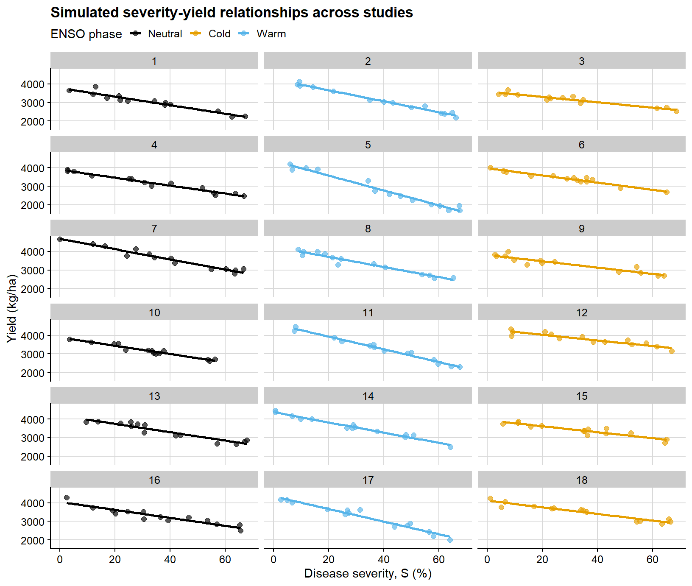
This is the type of structure in which ordinary regression becomes limited. Each study has its own baseline productivity and damage slope, while the full dataset also includes between-year and between-phase sources of variation.
Because this is a didactic simulation, the ENSO-specific differences in attainable yield and slope are intentionally cleaner than what is typically observed in empirical datasets. Field data often exhibit substantially greater overlap among groups, weaker moderator signals, and noisier study-specific relationships.
Modeling yield loss with mixed-effects models
Mixed models are useful when observations are not independent because they are clustered within studies, years, locations, or other grouping factors. In yield loss datasets, this is usually the rule rather than the exception.
1. A general damage coefficient without moderators
The first step is deliberately simple: fit a mixed model with severity as the only fixed-effect predictor. This yields a population-average attainable yield and a population-average slope while still accounting for study-to-study heterogeneity through random effects.
Linear mixed model fit by REML. t-tests use Satterthwaite's method [
lmerModLmerTest]
Formula: yield ~ severity + (1 + severity | study) + (1 | year)
Data: damage_df
Control: lmerControl(optimizer = "bobyqa", optCtrl = list(maxfun = 2e+05))
REML criterion at convergence: 3274.7
Scaled residuals:
Min 1Q Median 3Q Max
-2.50950 -0.67222 -0.03789 0.62647 2.69776
Random effects:
Groups Name Variance Std.Dev. Corr
study (Intercept) 76122.92 275.904
severity 49.77 7.055 -0.70
year (Intercept) 8277.77 90.982
Residual 17235.75 131.285
Number of obs: 252, groups: study, 18; year, 6
Fixed effects:
Estimate Std. Error df t value Pr(>|t|)
(Intercept) 4142.673 76.737 9.436 53.99 4.47e-13 ***
severity -23.961 1.716 17.171 -13.96 8.37e-11 ***
---
Signif. codes: 0 '***' 0.001 '**' 0.01 '*' 0.05 '.' 0.1 ' ' 1
Correlation of Fixed Effects:
(Intr)
severity -0.618
For the mixed-model summaries below, I use a parametric bootstrap. This is particularly useful for the damage coefficient because the latter is a nonlinear function of the intercept and slope:
\[DC = -100 \times \frac{b_1}{b_0}\]
# helper for percentile bootstrap intervalsboot_percentile <-function(boot_obj, terms, level =0.95) { alpha <- (1- level) /2 lower <-apply(boot_obj$t[, terms, drop =FALSE], 2, quantile, probs = alpha, na.rm =TRUE) upper <-apply(boot_obj$t[, terms, drop =FALSE], 2, quantile, probs =1- alpha, na.rm =TRUE)tibble(term = terms,estimate = boot_obj$t0[terms],ci_lb = lower,ci_ub = upper )}overall_grid <-tibble(severity =seq(0, 70, by =1))overall_boot_fun <-function(fit) {# fixed effects define the population-average damage function beta <-fixef(fit) b0 <-unname(beta["(Intercept)"]) b1 <-unname(beta["severity"])# population-average fitted values for the confidence band mu <-predict(fit, newdata = overall_grid, re.form =NA)# new observations include residual variation for prediction intervals y_new <-rnorm(length(mu), mean = mu, sd =sigma(fit))c(attainable_yield = b0,slope = b1,damage_coefficient =-100* b1 / b0, stats::setNames(mu, paste0("fit_", seq_along(mu))), stats::setNames(y_new, paste0("pred_", seq_along(y_new))) )}overall_boot <-bootMer( damage_lmer_overall,FUN = overall_boot_fun,nsim =250,type ="parametric",use.u =FALSE,seed =123)overall_damage <-boot_percentile( overall_boot,terms =c("attainable_yield", "slope", "damage_coefficient")) %>%mutate(term =recode( term,attainable_yield ="Attainable yield",slope ="Slope",damage_coefficient ="Damage coefficient" ),across(c(estimate, ci_lb, ci_ub), round, 2) )
Warning: There was 1 warning in `mutate()`.
ℹ In argument: `across(c(estimate, ci_lb, ci_ub), round, 2)`.
Caused by warning:
! The `...` argument of `across()` is deprecated as of dplyr 1.1.0.
Supply arguments directly to `.fns` through an anonymous function instead.
# Previously
across(a:b, mean, na.rm = TRUE)
# Now
across(a:b, \(x) mean(x, na.rm = TRUE))
overall_damage %>%kable(caption ="Bootstrap percentile intervals for the overall mixed-model summary")
Bootstrap percentile intervals for the overall mixed-model summary
term
estimate
ci_lb
ci_ub
Attainable yield
4142.67
3985.95
4296.14
Slope
-23.96
-27.23
-20.46
Damage coefficient
0.58
0.50
0.65
Under this formulation:
attainable yield is the model-based population-average yield at zero disease
slope is the model-based population-average absolute yield loss per 1 percentage-point increase in severity
damage coefficient is the corresponding relative yield loss per 1 percentage-point increase in severity
the bootstrap confidence intervals summarize the uncertainty around those population-level quantities
This summary is useful, but it should not be interpreted as a universal or context-free damage coefficient. It remains a population-level estimate conditional on the adopted mixed-model structure and on the coding of the data.
Confidence intervals versus prediction intervals
These two interval types answer different inferential questions:
a confidence interval around the fitted line quantifies uncertainty in the estimated mean response
a prediction interval is wider because it characterizes where a new observation may fall
So, in practice:
confidence intervals are about the uncertainty of the model-implied average relationship
prediction intervals are about the uncertainty of future data points around that relationship
overall_fit <-predict(damage_lmer_overall, newdata = overall_grid, re.form =NA)fit_cols_overall <-grep("^fit_", colnames(overall_boot$t), value =TRUE)pred_cols_overall <-grep("^pred_", colnames(overall_boot$t), value =TRUE)overall_curve <- overall_grid %>%mutate(fit = overall_fit,conf_lb =apply(overall_boot$t[, fit_cols_overall, drop =FALSE], 2, quantile, probs =0.025),conf_ub =apply(overall_boot$t[, fit_cols_overall, drop =FALSE], 2, quantile, probs =0.975),pred_lb =apply(overall_boot$t[, pred_cols_overall, drop =FALSE], 2, quantile, probs =0.025),pred_ub =apply(overall_boot$t[, pred_cols_overall, drop =FALSE], 2, quantile, probs =0.975) )
The confidence interval is shown first because it is the narrower quantity and directly reflects uncertainty around the estimated mean response.
ggplot(overall_curve, aes(severity, fit)) +# confidence interval for the mean fitted responsegeom_ribbon(aes(ymin = conf_lb, ymax = conf_ub), fill ="#1f6f78", alpha =0.22) +geom_line(color ="#154d57", linewidth =1.4) +background_grid() +labs(title ="Overall mixed model: confidence interval for the mean response",x ="Disease severity, S (%)",y ="Yield (kg/ha)" )
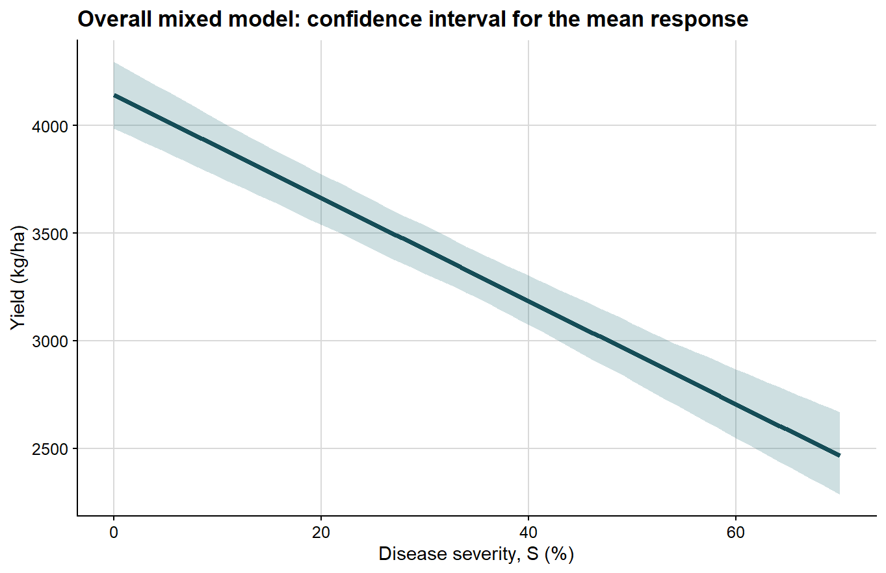
Next comes the prediction interval, which is wider because it includes the dispersion of future observations around the mean response.
Because these bands are obtained from percentile limits of a finite parametric bootstrap sample, they are not expected to look perfectly smooth or exactly linear, especially when the number of bootstrap refits is modest. Small local irregularities in the ribbon therefore reflect Monte Carlo error in the bootstrap quantiles rather than a biological departure from linearity in the fitted damage function.
ggplot(overall_curve, aes(severity, fit)) +# prediction interval for a new observationgeom_ribbon(aes(ymin = pred_lb, ymax = pred_ub), fill ="#6e8fa4", alpha =0.24) +geom_line(color ="#154d57", linewidth =1.4) +background_grid() +labs(title ="Overall mixed model: prediction interval for new observations",x ="Disease severity, S (%)",y ="Yield (kg/ha)" )
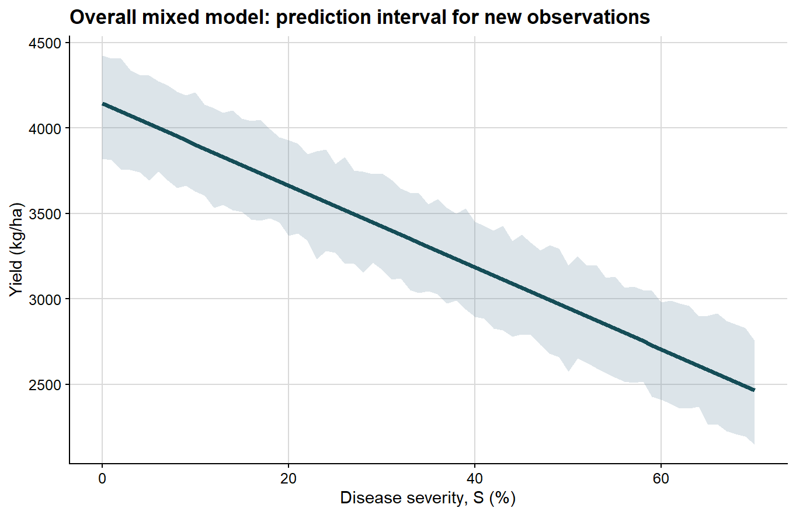
Once that distinction is clear, both intervals can be displayed together in a single plot.
ggplot(overall_curve, aes(severity, fit)) +# prediction interval is wider and shown firstgeom_ribbon(aes(ymin = pred_lb, ymax = pred_ub), fill ="#6e8fa4", alpha =0.18) +# confidence interval is narrower and shown on topgeom_ribbon(aes(ymin = conf_lb, ymax = conf_ub), fill ="#1f6f78", alpha =0.24) +geom_line(color ="#154d57", linewidth =1.5) +background_grid() +labs(title ="Overall mixed model: confidence and prediction intervals together",x ="Disease severity, S (%)",y ="Yield (kg/ha)" )
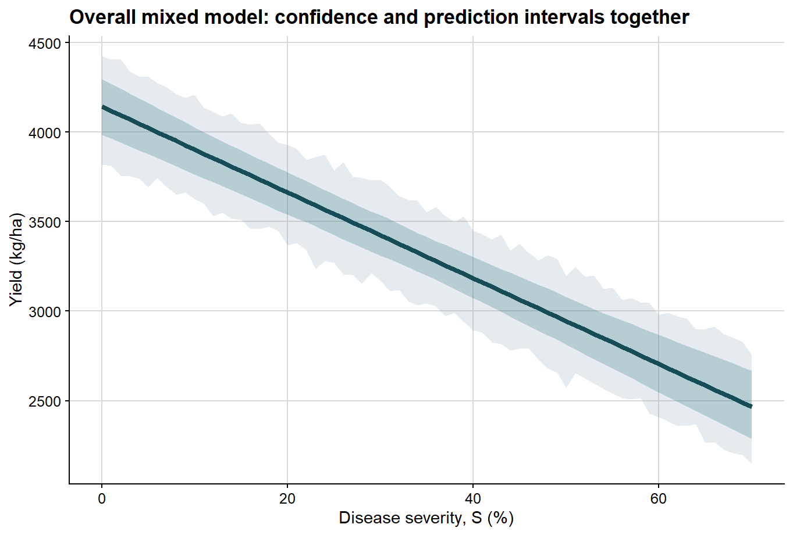
2. Extending the mixed-effects model with moderators
Once the general relationship has been established, the next question is whether the damage function changes across epidemiological contexts. Here I use ENSO phase as a moderator.
The model now includes:
a fixed effect of severity
a fixed effect of ENSO phase
a severity by ENSO interaction
a random intercept and random slope for each study
Linear mixed model fit by REML. t-tests use Satterthwaite's method [
lmerModLmerTest]
Formula: yield ~ severity * enso + (1 + severity | study) + (1 | year)
Data: damage_df
Control: lmerControl(optimizer = "bobyqa", optCtrl = list(maxfun = 2e+05))
REML criterion at convergence: 3217.3
Scaled residuals:
Min 1Q Median 3Q Max
-2.61328 -0.67266 -0.08572 0.63837 2.72989
Random effects:
Groups Name Variance Std.Dev. Corr
study (Intercept) 52708.762 229.584
severity 8.073 2.841 -0.36
year (Intercept) 6165.613 78.521
Residual 17220.223 131.226
Number of obs: 252, groups: study, 18; year, 6
Fixed effects:
Estimate Std. Error df t value Pr(>|t|)
(Intercept) 4083.044 103.569 14.603 39.423 3.05e-16 ***
severity -22.981 1.387 16.214 -16.566 1.38e-11 ***
ensoCold -116.170 138.639 11.713 -0.838 0.418841
ensoWarm 294.504 139.051 11.853 2.118 0.056014 .
severity:ensoCold 6.322 1.947 15.755 3.247 0.005137 **
severity:ensoWarm -9.291 1.946 15.752 -4.775 0.000215 ***
---
Signif. codes: 0 '***' 0.001 '**' 0.01 '*' 0.05 '.' 0.1 ' ' 1
Correlation of Fixed Effects:
(Intr) sevrty ensCld ensWrm svrt:C
severity -0.414
ensoCold -0.675 0.309
ensoWarm -0.673 0.308 0.503
svrty:nsCld 0.295 -0.712 -0.427 -0.220
svrty:nsWrm 0.295 -0.713 -0.221 -0.432 0.508
The fixed part of the model now addresses a moderated question: on average, does the severity-yield relationship differ among ENSO phases?
The random part answers a different question: how much do individual studies deviate from the population-average intercept and slope?
Interpreting the moderated mixed model
Under this formulation:
the intercept corresponds to the expected attainable yield for the reference ENSO class when severity is zero
the severity coefficient is the baseline damage slope for the reference class
the interaction terms quantify how the slope changes in the other ENSO phases
the study-level random effects allow each study to have its own attainable yield and its own damage slope
This is often a strong modeling strategy when the primary objective is to analyze the full hierarchical dataset directly while testing whether a contextual factor modifies disease damage.
The same bootstrap strategy can be extended here, now allowing the phase-specific summaries to vary across bootstrap refits.
Bootstrap percentile intervals for phase-specific summaries from the moderated mixed model
enso
parameter
estimate
ci_lb
ci_ub
Neutral
Attainable yield
4083.04
3881.59
4255.68
Neutral
Slope
-22.98
-25.33
-20.18
Neutral
Damage coefficient
0.56
0.50
0.62
Cold
Attainable yield
3966.87
3783.28
4143.51
Cold
Slope
-16.66
-19.16
-13.77
Cold
Damage coefficient
0.42
0.36
0.48
Warm
Attainable yield
4377.55
4222.27
4558.66
Warm
Slope
-32.27
-35.12
-29.87
Warm
Damage coefficient
0.74
0.68
0.80
enso_fit <-predict(damage_lmer_enso, newdata = enso_grid, re.form =NA)fit_cols_enso <-grep("^fit_", colnames(enso_boot$t), value =TRUE)pred_cols_enso <-grep("^pred_", colnames(enso_boot$t), value =TRUE)loss_fit_cols_enso <-grep("^loss_fit_", colnames(enso_boot$t), value =TRUE)loss_pred_cols_enso <-grep("^loss_pred_", colnames(enso_boot$t), value =TRUE)enso_curves <- enso_grid %>%mutate(fit = enso_fit,conf_lb =apply(enso_boot$t[, fit_cols_enso, drop =FALSE], 2, quantile, probs =0.025),conf_ub =apply(enso_boot$t[, fit_cols_enso, drop =FALSE], 2, quantile, probs =0.975),pred_lb =apply(enso_boot$t[, pred_cols_enso, drop =FALSE], 2, quantile, probs =0.025),pred_ub =apply(enso_boot$t[, pred_cols_enso, drop =FALSE], 2, quantile, probs =0.975),rel_loss_fit =apply(enso_boot$t[, loss_fit_cols_enso, drop =FALSE], 2, median),rel_loss_conf_lb =apply(enso_boot$t[, loss_fit_cols_enso, drop =FALSE], 2, quantile, probs =0.025),rel_loss_conf_ub =apply(enso_boot$t[, loss_fit_cols_enso, drop =FALSE], 2, quantile, probs =0.975),rel_loss_pred_lb =apply(enso_boot$t[, loss_pred_cols_enso, drop =FALSE], 2, quantile, probs =0.025),rel_loss_pred_ub =apply(enso_boot$t[, loss_pred_cols_enso, drop =FALSE], 2, quantile, probs =0.975) )phase_label_df <- lmer_phase_estimates %>%filter(parameter =="Damage coefficient") %>%transmute( enso,label =paste0(enso, "\nDC = ", estimate, "%/pp") ) %>%left_join( enso_curves %>%group_by(enso) %>%slice_tail(n =1) %>%ungroup() %>%select(enso, fit, rel_loss_fit),by ="enso" )
These curves remain population-level summaries derived from the mixed model. The bootstrap simply allows uncertainty to be quantified for both the estimated mean response and the prediction of new observations.
The first faceted figure shows only the confidence interval, so the reader can focus on uncertainty in the mean severity-yield relationship within each ENSO phase.
ggplot(enso_curves, aes(severity, fit)) +# confidence interval for the mean fitted response in each phasegeom_ribbon(aes(ymin = conf_lb, ymax = conf_ub), fill ="#1f6f78", alpha =0.22) +geom_line(color ="#154d57", linewidth =1.3) +facet_wrap(~enso, nrow =1) +background_grid() +labs(title ="Moderated mixed model: confidence intervals by ENSO phase",x ="Disease severity, S (%)",y ="Yield (kg/ha)" )
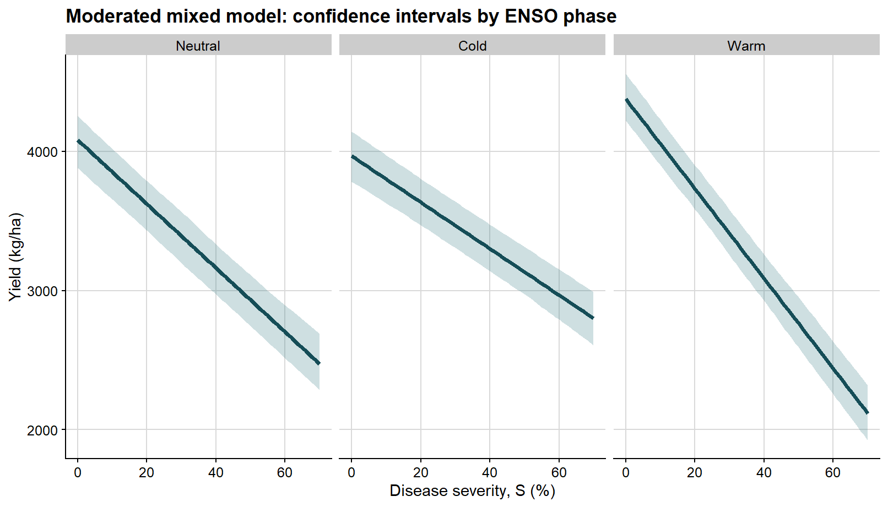
The second faceted figure shows the prediction interval, which is wider because it reflects the variability of future observations around those phase-specific mean lines.
Again, because these prediction bands are constructed from finite bootstrap percentiles, they may display slight local waviness instead of perfectly straight boundaries. With a relatively small number of bootstrap simulations, that behavior should be interpreted as a numerical feature of the resampling procedure rather than as evidence that the underlying mean relationship is nonlinear.
ggplot(enso_curves, aes(severity, fit)) +# prediction interval for a new observation in each phasegeom_ribbon(aes(ymin = pred_lb, ymax = pred_ub), fill ="#6e8fa4", alpha =0.24) +geom_line(color ="#154d57", linewidth =1.3) +facet_wrap(~enso, nrow =1) +background_grid() +labs(title ="Moderated mixed model: prediction intervals by ENSO phase",x ="Disease severity, S (%)",y ="Yield (kg/ha)" )
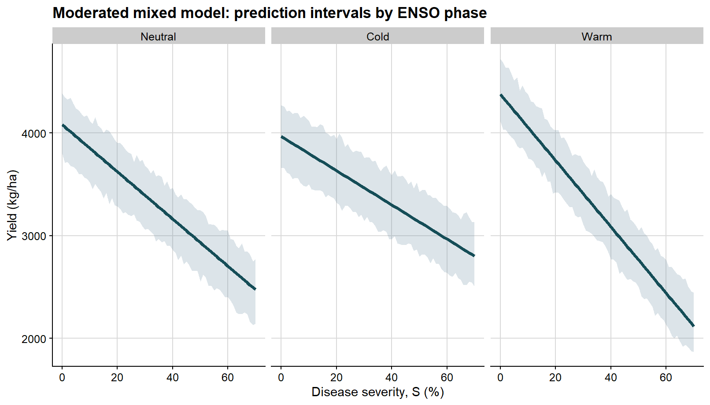
Once the distinction is clear, the two types of interval can be merged in a single view.
Because disease damage is often easier to interpret on a relative scale, it is also useful to express the same bootstrap results in terms of percentage yield loss.
The next plot follows the same logic, but the y-axis is now expressed as relative yield loss rather than absolute yield.
ggplot(enso_curves, aes(severity, rel_loss_fit)) +# prediction interval on the relative-loss scalegeom_ribbon(aes(ymin = rel_loss_pred_lb, ymax = rel_loss_pred_ub), fill ="#6e8fa4", alpha =0.18) +# confidence interval on the relative-loss scalegeom_ribbon(aes(ymin = rel_loss_conf_lb, ymax = rel_loss_conf_ub), fill ="#1f6f78", alpha =0.24) +geom_line(color ="#154d57", linewidth =1.35) +geom_text(data = phase_label_df,aes(x =71, y = rel_loss_fit, label = label),hjust =0,vjust =0.5,size =3.4,lineheight =0.95 ) +facet_wrap(~enso, nrow =1) +coord_cartesian(xlim =c(0, 84), clip ="off") +background_grid() +labs(title ="Relative yield loss implied by the moderated mixed model",x ="Disease severity, S (%)",y ="Relative yield loss (%)" ) +theme(plot.margin =margin(5.5, 70, 5.5, 5.5))
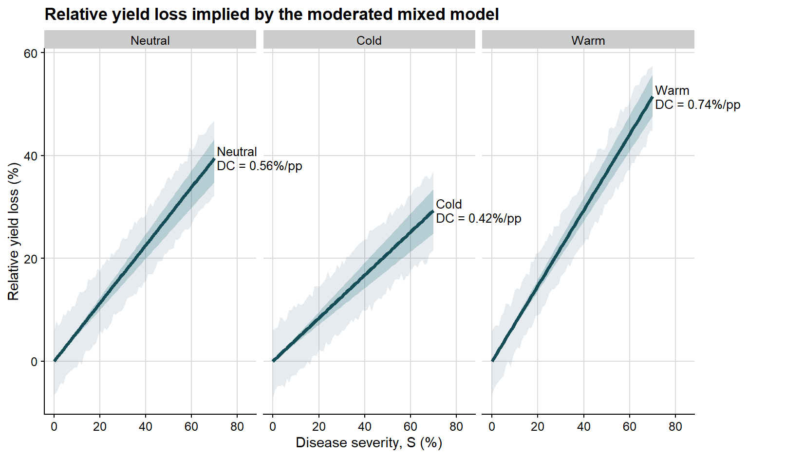
This step preserves interpretation at the mixed-model level. We are still working with the fixed effects from a mixed-effects model fitted with lmer(), but now expressing them in the classical language of attainable yield, slope, and damage coefficient.
A separate route: study-level regressions followed by meta-analysis
The inferential logic of meta-analysis is distinct from that of mixed models and is therefore best presented as a separate workflow.
With mixed-effects modeling, we model the raw data directly.
With meta-analysis, the workflow proceeds by fitting a series of regressions, one for each study, and only then synthesizing the resulting study-level damage estimates. In this workflow, the study-specific damage coefficient is obtained through two regression steps, following the logic commonly used in classical yield loss analyses.
So the sequence is:
fit an ordinary regression for each study
extract intercept and slope
compute the study-specific damage coefficient
estimate its sampling variance
meta-analyze those study-level estimates
Step 1. First regression: yield on severity within each study
The first regression provides the study-specific intercept and slope.
Study-specific coefficients from the first regression
study
year
enso
intercept
slope_yield
1
2015
Neutral
3785.27
-23.06
2
2015
Warm
4259.11
-29.66
3
2015
Cold
3595.32
-14.47
4
2016
Neutral
3894.87
-21.33
5
2016
Warm
4386.36
-40.15
6
2016
Cold
3978.41
-19.38
7
2017
Neutral
4678.26
-27.22
8
2017
Warm
4265.57
-27.34
Before moving to the relative-loss scale, it is helpful to visualize what the first regression is doing. Each line below represents the fitted severity-yield relationship for a single study, stratified by ENSO phase. This makes explicit that the first step of the meta-analytic workflow is not a single pooled regression, but rather a collection of study-specific linear damage functions from which intercepts and slopes are extracted.
ggplot(study_line_grid, aes(severity, fitted_yield, group = study, color = enso)) +geom_line(linewidth =0.55, alpha =0.95, show.legend =FALSE) +facet_wrap(~enso, nrow =1) +scale_color_manual(values = enso_palette) +background_grid() +labs(title ="Study-specific severity-yield regressions from step 1",x ="Disease severity, S (%)",y ="Yield (kg/ha)" )
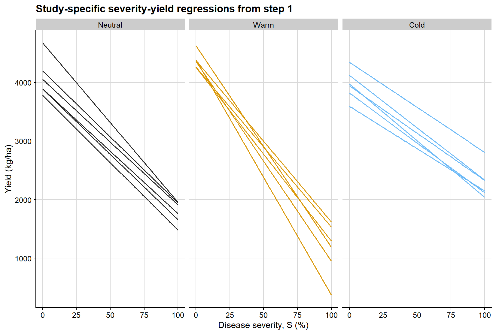
The next figure summarizes the study-specific coefficients extracted from those first-step regressions. The point clouds represent the individual study estimates, while the larger points and horizontal segments show the phase-specific means and central ranges. This display is useful because it separates variation in attainable yield from variation in absolute damage rate before the transformation to relative loss is introduced.
Relative yield loss calculated from the study-specific attainable yield
study
enso
severity
yield
intercept
relative_loss
1
Neutral
3.38
3642.89
3785.27
3.76
1
Neutral
12.01
3452.23
3785.27
8.80
1
Neutral
12.98
3850.65
3785.27
-1.73
1
Neutral
17.20
3237.47
3785.27
14.47
1
Neutral
21.49
3345.90
3785.27
11.61
1
Neutral
21.96
3124.54
3785.27
17.46
1
Neutral
24.73
3071.67
3785.27
18.85
1
Neutral
34.30
3086.50
3785.27
18.46
At this stage, the response variable has changed. The figure below shows the observation-level relative yield loss obtained after scaling each yield value by the study-specific attainable yield from the first regression. This step is critical because it moves the analysis from the absolute scale of yield to the proportional scale on which the damage coefficient is defined.
ggplot(relative_loss_df, aes(severity, relative_loss, color = enso)) +geom_hline(yintercept =0, linetype =2, color ="grey40", linewidth =0.7) +geom_point(shape =16, alpha =0.6, size =1.8, show.legend =FALSE) +facet_wrap(~enso, nrow =1) +scale_color_manual(values = enso_palette) +background_grid() +labs(title ="Observation-level relative yield loss after the step-2 transformation",x ="Disease severity, S (%)",y ="Relative yield loss (%)" )
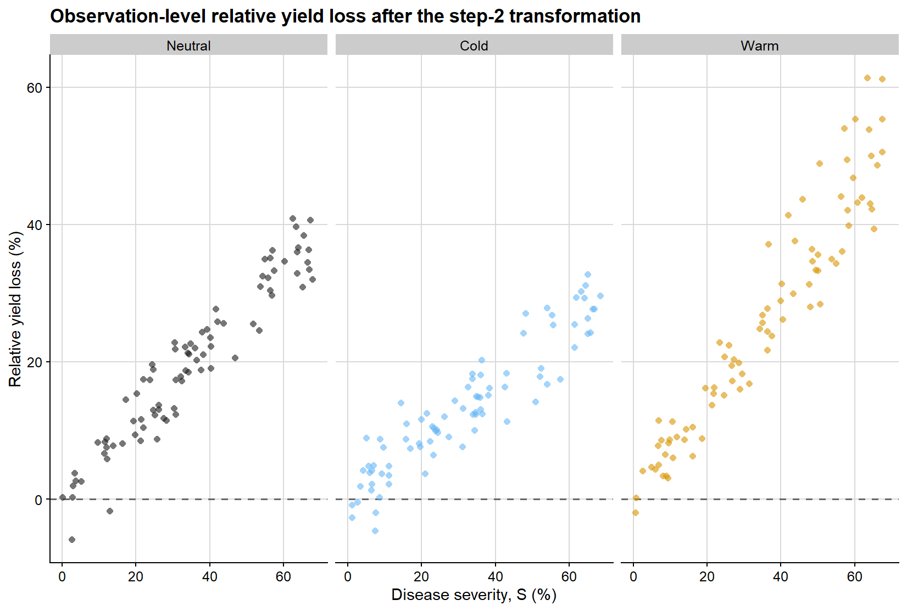
Step 3. Second regression: relative loss on severity through the origin
We then fit a second regression for each study:
\[L = DC \times S\]
That is, relative yield loss is regressed on severity with no intercept, and the slope of this second regression is the study-specific damage coefficient.
Study-level damage coefficients from the second regression
study
year
enso
damage_coefficient
sei_dc
1
2015
Neutral
0.609
0.0259
2
2015
Warm
0.696
0.0123
3
2015
Cold
0.402
0.0209
4
2016
Neutral
0.548
0.0151
5
2016
Warm
0.915
0.0215
6
2016
Cold
0.487
0.0188
7
2017
Neutral
0.582
0.0174
8
2017
Warm
0.641
0.0227
The second regression is easier to interpret visually when represented as a family of lines constrained to pass through the origin. Each line below is a study-specific estimate of the damage coefficient, obtained from regressing relative yield loss on severity without an intercept. The slope of each line is therefore the study-level damage coefficient used in the subsequent meta-analysis.
ggplot(dc_line_grid, aes(severity, relative_loss, group = study, color = enso)) +geom_line(linewidth =0.55, alpha =0.95, show.legend =FALSE) +facet_wrap(~enso, nrow =1) +scale_color_manual(values = enso_palette) +coord_cartesian(xlim =c(0, 100), ylim =c(0, 100)) +background_grid() +labs(title ="Study-specific damage functions from step 3",x ="Disease severity, S (%)",y ="Relative yield loss (%)" )
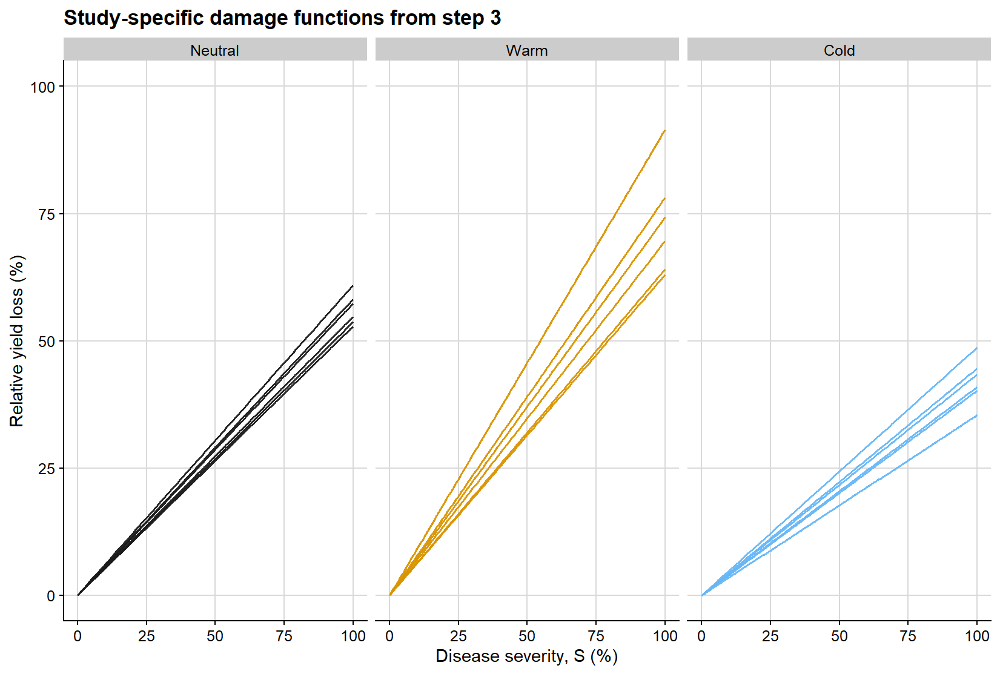
Because the second-step slopes are the quantities ultimately synthesized in the meta-analysis, it is also useful to examine their empirical distribution before fitting the meta-analytic model. The histogram below gives a direct view of how the study-level damage coefficients are distributed within each ENSO phase.
ggplot(study_effects, aes(damage_coefficient)) +geom_histogram(bins =12, fill ="grey35", color ="white", linewidth =0.2) +facet_wrap(~enso, ncol =1, scales ="free_y") +background_grid() +labs(title ="Distribution of study-level damage coefficients before meta-analysis",x ="Damage coefficient (% yield loss per 1% severity)",y ="Count" )
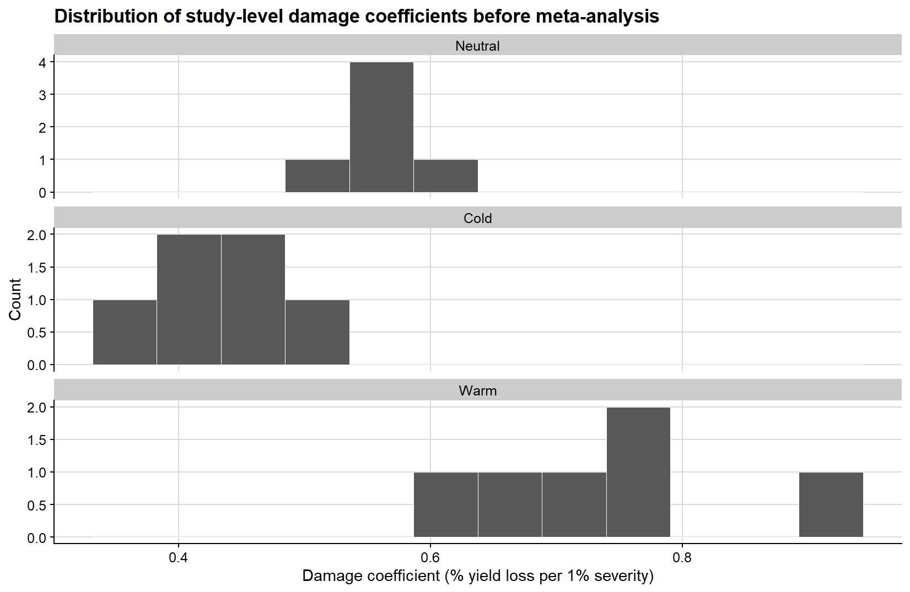
The variance calculation is critical. A meta-analytic model does not only require the effect size estimate (yi); it also requires the corresponding sampling variance (vi) or standard error. Without that information, studies cannot be weighted appropriately.
Fitting the meta-analytic model
The study-specific damage coefficients can now be synthesized with a multilevel meta-analytic model. Because studies are clustered within years, I use rma.mv() instead of rma.uni().
A meta-analytic estimate without moderators
The first meta-analytic step mirrors the general mixed-effects summary: a single pooled damage coefficient across all studies, without moderators.
Multivariate Meta-Analysis Model (k = 18; method: REML)
Variance Components:
estim sqrt nlvls fixed factor
sigma^2.1 0.0000 0.0000 6 no year
sigma^2.2 0.0210 0.1449 18 no year/study
Test for Heterogeneity:
Q(df = 17) = 940.9582, p-val < .0001
Model Results:
estimate se zval pval ci.lb ci.ub
0.5735 0.0345 16.6247 <.0001 0.5059 0.6411 ***
---
Signif. codes: 0 '***' 0.001 '**' 0.01 '*' 0.05 '.' 0.1 ' ' 1
This model answers a simple question: if ENSO is ignored and all study-level damage coefficients are pooled together, what is the average damage coefficient implied by the meta-analytic structure?
Multivariate Meta-Analysis Model (k = 18; method: REML)
Variance Components:
estim sqrt nlvls fixed factor
sigma^2.1 0.0003 0.0170 6 no year
sigma^2.2 0.0040 0.0632 18 no year/study
Test for Residual Heterogeneity:
QE(df = 15) = 174.3687, p-val < .0001
Test of Moderators (coefficients 1:3):
QM(df = 3) = 1188.0686, p-val < .0001
Model Results:
estimate se zval pval ci.lb ci.ub
ensoNeutral 0.5629 0.0281 20.0565 <.0001 0.5079 0.6180 ***
ensoCold 0.4219 0.0282 14.9551 <.0001 0.3666 0.4772 ***
ensoWarm 0.7335 0.0278 26.3752 <.0001 0.6790 0.7880 ***
---
Signif. codes: 0 '***' 0.001 '**' 0.01 '*' 0.05 '.' 0.1 ' ' 1
This model estimates a pooled damage coefficient for each ENSO phase while accounting for residual heterogeneity and clustering among studies within years.
Meta-analytic damage coefficient estimates by ENSO phase
enso
estimate
se
ci_lb
ci_ub
Neutral
0.563
0.028
0.508
0.618
Cold
0.422
0.028
0.367
0.477
Warm
0.733
0.028
0.679
0.788
The next figure summarizes the pooled damage coefficient estimates and their uncertainty at the meta-analytic level for the ENSO-specific model.
ggplot(meta_summary, aes(x = enso, y = estimate, color = enso)) +geom_point(size =3) +geom_errorbar(aes(ymin = ci_lb, ymax = ci_ub), width =0.08, linewidth =0.8) +scale_color_colorblind() +background_grid() +labs(title ="Meta-analytic estimates of the damage coefficient",x ="ENSO phase",y ="Damage coefficient (% yield loss per 1% severity)",color ="ENSO phase" ) +theme(legend.position ="none")
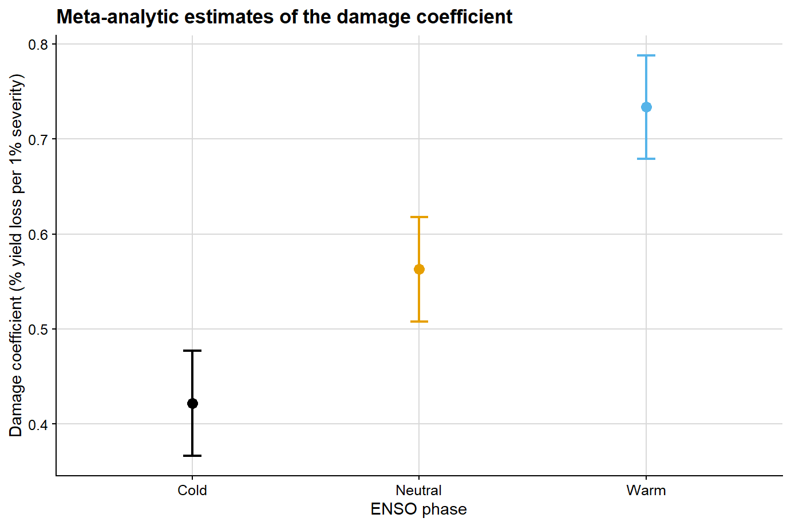
Comparing mixed-effects and meta-analytic estimates
At this point, it becomes possible to compare the two strategies directly. This comparison is informative because the two methods do not operate on the same inferential target:
mixed-effects modeling summarizes the full hierarchical dataset at the observation level
meta-analysis summarizes study-level damage coefficients after the two-regression workflow
Comparing the overall damage coefficient
The first comparison ignores moderators and asks whether both methods support a similar overall interpretation of disease damage.
lmer_overall_compare <- overall_damage %>%filter(term =="Damage coefficient") %>%transmute(method ="Mixed-effects", estimate, ci_lb, ci_ub )overall_compare <-bind_rows( lmer_overall_compare, meta_overall_summary %>%transmute(method ="Meta-analysis", estimate, ci_lb, ci_ub ))overall_compare %>%mutate(across(c(estimate, ci_lb, ci_ub), round, 3)) %>%kable(caption ="Comparison of the overall damage coefficient from mixed-effects and meta-analytic models")
Comparison of the overall damage coefficient from mixed-effects and meta-analytic models
method
estimate
ci_lb
ci_ub
Mixed-effects
0.580
0.500
0.650
Meta-analysis
0.574
0.506
0.641
The next plot presents that comparison graphically.
ggplot(overall_compare, aes(x = method, y = estimate, color = method)) +# point estimate from each methodgeom_point(size =3.2) +# uncertainty interval from each methodgeom_errorbar(aes(ymin = ci_lb, ymax = ci_ub), width =0.08, linewidth =0.8) +scale_color_manual(values =c("Mixed-effects"="#154d57", "Meta-analysis"="#c84c09")) +background_grid() +labs(title ="Overall damage coefficient: mixed-effects versus meta-analysis",x ="Method",y ="Damage coefficient (% yield loss per 1% severity)" ) +theme(legend.position ="none")
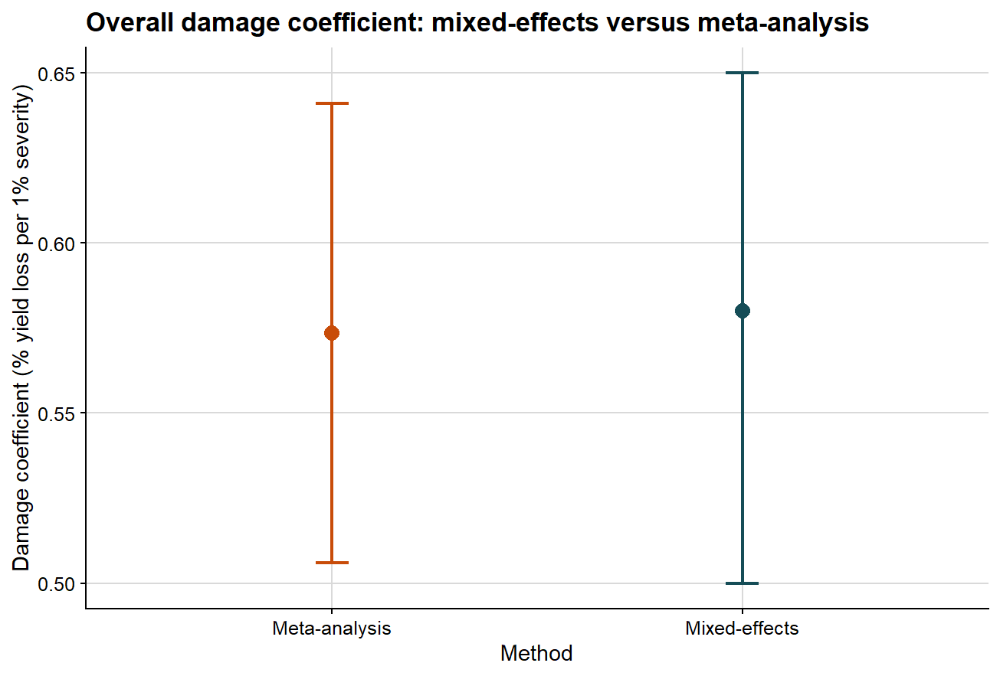
Comparing the ENSO-specific damage coefficients
The second comparison preserves the ENSO structure and asks whether the phase-specific pattern is consistent across methods.
ENSO-specific damage coefficient estimates from mixed-effects and meta-analytic models
enso
method
estimate
ci_lb
ci_ub
Neutral
Mixed-effects
0.560
0.500
0.620
Cold
Mixed-effects
0.420
0.360
0.480
Warm
Mixed-effects
0.740
0.680
0.800
Neutral
Meta-analysis
0.563
0.508
0.618
Cold
Meta-analysis
0.422
0.367
0.477
Warm
Meta-analysis
0.733
0.679
0.788
The plot below allows the ENSO-specific DC values to be compared side by side.
ggplot(phase_compare, aes(x = enso, y = estimate, color = method)) +# position dodge separates the two methods inside each ENSO phasegeom_point(position =position_dodge(width =0.35), size =3) +geom_errorbar(aes(ymin = ci_lb, ymax = ci_ub),position =position_dodge(width =0.35),width =0.08,linewidth =0.8 ) +scale_color_manual(values =c("Mixed-effects"="#154d57", "Meta-analysis"="#c84c09")) +background_grid() +labs(title ="ENSO-specific damage coefficients: mixed-effects versus meta-analysis",x ="ENSO phase",y ="Damage coefficient (% yield loss per 1% severity)",color ="Method" )
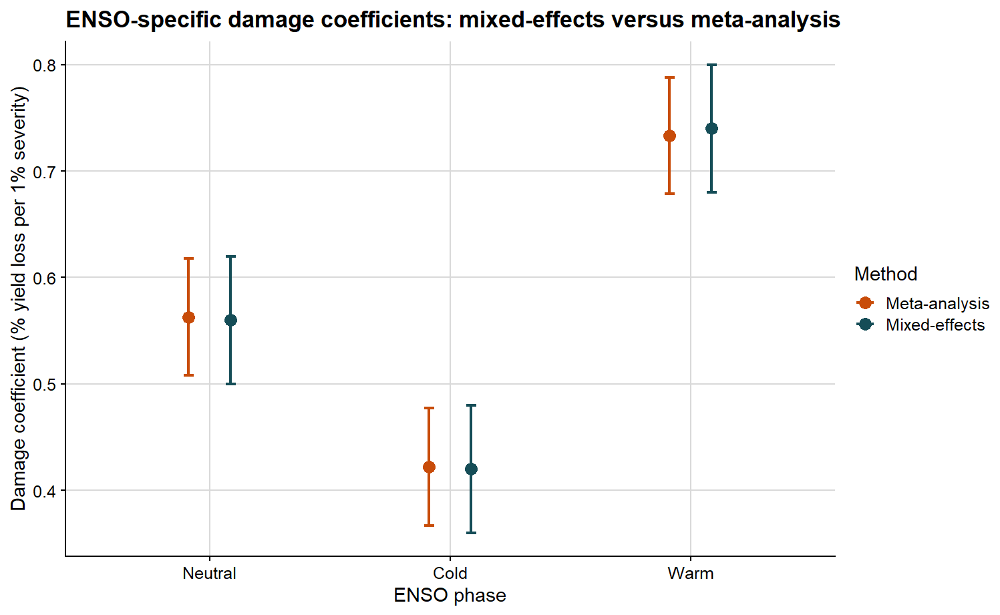
If both approaches support a similar biological interpretation, we should observe broad agreement in the ordering and magnitude of the damage coefficients. If they differ, that discrepancy is itself informative, because the methods summarize different statistical objects.
Under this type of model, interpretation is relatively straightforward:
larger values indicate greater proportional yield loss per unit increase in disease
differences among phases suggest that the severity-yield relationship changes with context
residual heterogeneity indicates that the damage process is not fully explained by the moderator alone
Mixed-effects modeling or meta-analysis?
These approaches answer related but distinct questions.
Use mixed-effects modeling when:
you want to model the full hierarchical dataset directly
you need study-level random intercepts and random slopes
you want to test fixed effects and interactions at the observation level
Use meta-analysis when:
your primary unit of inference is the study-level effect size
you want to synthesize slopes or damage coefficients across many studies
you need a formal meta-analytic framework for moderators and heterogeneity
In applied work, both approaches can be part of the same analytical workflow rather than viewed as competitors. A mixed model helps describe the raw hierarchical structure of the data, whereas a meta-analysis summarizes and compares study-level damage processes. The comparison above is useful precisely because it shows where the two perspectives converge and where they diverge.
Final remarks
Yield loss modeling in plant pathology involves considerably more than fitting a regression line between severity and yield. The central parameters each address a different scientific question:
attainable yield asks what the crop could produce in the absence of disease under the studied conditions
slope asks how quickly yield declines as disease increases
damage coefficient asks how large that decline is in relative terms
From that point onward, model choice depends on the inferential objective. If the interest lies in the full hierarchical dataset, mixed-effects modeling is often the natural starting point. If the objective is the synthesis of study-specific damage estimates, a meta-analytic framework becomes essential.
In a future post, I can extend this discussion by moving from linear damage functions to more specialized topics such as relative yield loss, nonlinear disease-response relationships, and the integration of yield loss models into economic decision frameworks.
Subscribe
Enjoy this blog? Get notified of new posts by email: